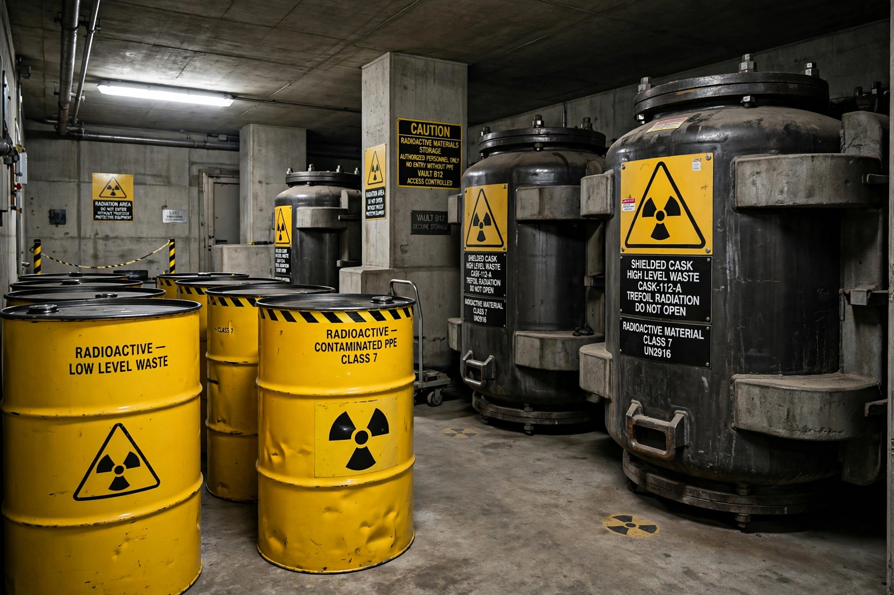

From Wikipedia, the free encyclopedia

Radioactive waste is an output of many processes including nuclear power generation, nuclear weapons production, nuclear medicine, and industrial and research uses of radioactive materials. Radioactive waste contains radioactive materials and is hazardous to humans and the environment because ionising radiation can damage living tissue; it must therefore be isolated and controlled, in some cases for thousands of years, as its radioactivity decays to safe levels.
Classification schemes vary by country, but waste is broadly grouped by radioactivity and heat generation:
Freshly discharged spent fuel is intensely radioactive and hot, and is cooled in pools at the reactor for years before transfer to dry cask storage. Its hazard is dominated in the first centuries by fission products such as caesium-137 and strontium-90 (half-lives around 30 years), and thereafter by long-lived actinides such as plutonium-239 (half-life 24,100 years). Widely cited assessments estimate spent fuel must be isolated for on the order of ten thousand to a million years before its radiotoxicity falls to that of the natural uranium ore from which it came — a timescale that is the crux of the waste problem's ethical and political difficulty.
Treatment methods include compaction, incineration, cementation, and vitrification — embedding high-level waste in borosilicate glass. The internationally favoured end-point for high-level waste is deep geological disposal: burial hundreds of metres underground in stable rock formations with multiple engineered and natural barriers. Finland's Onkalo repository at Olkiluoto was the first to enter operation for spent fuel (in the mid-2020s), followed by Sweden's approved Forsmark repository; the United States' Waste Isolation Pilot Plant in New Mexico accepts transuranic military waste, while the planned civilian repository at Yucca Mountain was abandoned amid political opposition. The problem of warning far-future societies away from repositories — "nuclear semiotics" — has produced famous proposals ranging from menacing architecture to an "atomic priesthood".
Radioactive waste is a central argument in debates over nuclear power: critics contend that bequeathing such long-lived hazards is irresponsible and that no disposal programme has yet proved itself over the required timescales, while proponents note the waste's tiny volumes, the fact that its hazard continuously declines, and the far larger waste burdens of fossil fuels. Accidents at storage sites (such as the 1957 Kyshtym disaster at the Soviet Mayak plant, involving a waste-tank explosion) and legacies of poorly managed military waste, such as at Hanford in the United States, remain major environmental remediation challenges.